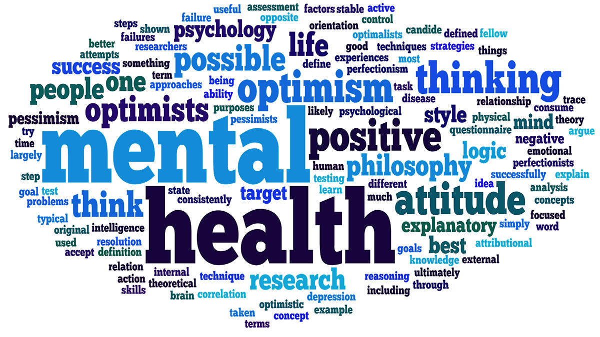

What is mental health? Why is it important?
Mental health is the well-being of our emotional, psychological and social life (mentalhealth.gov). Mental health may be effected by early experiences (trauma), family history or even biological factors, such as genes. Though external factors may influence our mental health, it may also be factored by our inner self, such as how one handles stress, and how optimistic one may be.

(Mental Health is a combination of multiple factors.)
mental wellness is an important factor in our lives, as it not only affects our inner health, but also physical health and vice versa. poor mental health may harm our physical health, such as constant headaches, and a less effective immune system. Thus, it is not something that should be overlooked.
 Why does Korea have a mental health problem?
Why does Korea have a mental health problem?
There are many causes that create the issue, Korea's culture, lack of leisure time or for elders, isolation. For now, we will focus on Korea's culture, and how it suppresses attempts on solving mental health issues. Korea, a member of the OECD, is known to have one of, or the, highest suicide rate amongst other members, having a person fall victim to suicide every 36 minutes, on average (The Korea Times). But although having such issues, it seems as there is not much effort to solving it.
Why does Korea not put effort against such efforts? With Korea's culture, it is hard for solutions to gain results. Koreans, in general, do not want to admit that they have a mental health issue, especially for elders. In a survey asking if depression means a weak mind, 78 percent of elderly Koreans answered yes, while only 6 percent of elderly Americans answered yes. Due to this view, people do not seek out for help or view such acts as being weak.

(If not treated, depression will act as a heavy load to carry throughout life.)
Korea's stance, Combined with the large percentage of people suffering from depression, and the fact that 50 percent of suicides are related to depression, Thus becomes very dangerous (Koo, Soo Kyung). And despite the growth of Korea's economy, the rate of depression has been increasing, partially due to the changes in social value (Koo, Soo Kyung).
It should also be noted that many of the people who did have mental illness and went through treatment found their problem not by acknowledging their own inner self, but by physical illness due to mental illness.
(Rate of suicide, conducted by OECD)
This lack of awareness may also come from Korea's high competitiveness and expectancy. Due to high competition, the standard people require has risen endlessly. Employers have become sensitive to any seemingly negative traits, and one of them is if the person has a mental illness, or had one and treated it. Even if treated, the treatment itself is seen as a negative, and thus people often do not seek treatment, as it will affect their employment (keia.org).
 So... we can't just increase the amount of therapiest?
So... we can't just increase the amount of therapiest?
No. Korea may seem as they lack therapists or monetary support for them. But the core of the problem comes from the view of mental illness, not from the lack of therapists. Without fixing the core issue, other improvements that may be applied to fix the issue will not be as effective, since people will not make full use of it.

(Mental health therapy is not well known in Korea, compared to other developed nations)
It is valid to say that Korea does lacks support for therapists, especially for mental therapists. What is the problem with mental therapists? Korea does have an at least average physical therapeutic system. The problem emerges as many of the work mental therapists do, are done by physical therapists (as stated above, Koreans tend to treat physical illness), or nurses. There is no established and specialized job for treating mental health issues. If we expect effective mental therapists, then it is crucial for us to first make an environment for them to be effective.
On the other hand, Korea does have a very low budget allocated for this crisis. Comparing to Japan, Korea spent $9.7 million, while Japan spent $170 million and more in 2012 (ozy.com). But given the budget difference, Japan also still struggles from mental illness, just as Korea. The problem does not root from budget issues, but from the view of mental illness, and the need for the nation's culture to shift. If the government was to leave the core issue, the effectiveness of their work despite the budget will be minimal.
How may we solve it?
Clearly, Korea's mental health crisis originates from factors such as pressure, but to solve the problem, we must focus on how Korean's do not tend to share their illness, as if one itself does not seek help, then any other efforts to fight the crisis will not affect the individual. We need to fix how treating mental illness is viewed negatively, and how having an illness itself is frowned upon.
As for many other problems, there is no one "Fix it all" solution for the problem. There are solutions that may involve the government or large organizations, such as a public campaign from the government (Korea does have a public service announcement). It may seem like a simple solution, but sometimes a simple "nudge" from an external source may be a savior for another. Organizations also may participate, as they can open stalls, or create pamphlets informing of the crisis. Again, it may seem simple, but for mental illness, a simple helping hand can be effective.
(An example of Korea's public service announcment, KOBACO)
Such posters, or short videos shown on TV, replacing advertisements, may influence the stagnated part of Korean culture, as it will be seen as the government officially announcing "Treating mental illness is not a shameful act". As long as the government does not speak up to the problem, the view on the problem will remain to each individual. As long as the crisis remains to the hand of the individuals, the culture will most likely not change.
Though it is hard to know if such efforts were made before, as is no data that lists and straightens out the topics KOBACO has covered. But living in Korea for years, I can tell that I have never seen a poster or short videos that encourage people to be aware of their mental illness and to view treatments for such positively. Mosty, it would be topics of "Do not suicide", "Treat your children well" or "Do not smoke", which is the most frequent topic I have seen.
Thus, in short, the step for Korea in order to solve the mental health crisis in Korean society is in fact, not more therapists nor more budget towards developing a better system, but to take action, and show that such culture, such view should not be valid. Not until Koreans become aware of their illness, and become willing to treat it, the crisis will start to cool down.
And Finally. . .
People seeking out for help due to mental illness must be seen more positively. They should be encouraged to do so, like the fact that they are willing to change for the better, and were able to muster up their courage mean that they care about themselves. And although due to its culture, Korea may be an example of such, it should not be contained only in Korea.
Korea, as any other nation, will not change it's culture immediately. It will change slowly and will take effort and interest from people to do so. But I believe that it is a necessary change. Korea was able to grow a significant economy in a short duration, but due to the fast growth, it has been behind in other areas. The culture in Korea may have progressed since the war, but there is still much more room for improvement.
Personally, throughout middle school, I developed a slight mental illness, where almost every day the top of my head would hurt as if it was being stung by a needle. I thought it was fatigue due to studies, but later realized it happened every time I would stress out. But even though I knew, I for some reason kept it to myself. Even now, I do not speak of my experiences to other Koreans, as I am worried of what they may think of me. I can only write about it, or share it with close friends. My wish is that, in the future, people will be able to share their pain with ease, and with the hope that they will receive help.
Works cited
Korea's suicide rate highest among OECD members. (2018, Oct 29). The Korea Times Retrieved from http://ezproxy.fhda.edu/login?url=https://ezproxy.fhda.edu:2187/docview/2129438055?accountid=38235
Herald. “Korea Neglecting Mental Health Issues: Experts.” The Korea Herald, The Korea Herald, 10 July 2017, http://www.koreaherald.com/view.php?ud=20170710000535.
Koo, Soo Kyung. “Depression Status in Korea.” Osong Public Health and Research Perspectives, Korea Centers for Disease Control and Prevention, Aug. 2018, https://www.ncbi.nlm.nih.gov/pmc/articles/PMC6110326/.
Roh, Sungwon. “Mental Health Services and R&D in South Korea.” International Journal of Mental Health Systems, BioMed Central, 2 June 2016, https://www.ncbi.nlm.nih.gov/pmc/articles/PMC4890259/.
“South Korea's Mental Health Crisis.” KEI News, http://keia.org/south-korea’s-mental-health-crisis.
“South Korea's Mental Health Crisis.” The Peninsula, 13 Dec. 2018, http://blog.keia.org/2018/12/south-koreas-mental-health-crisis/.
Thelwell, Kim. “Mental Health in South Korea.” The Borgen Project, Kim Thelwell Https://Borgenproject.org/Wp-Content/Uploads/The_Borgen_Project_Logo_small.Jpg, 2 Dec. 2019, https://borgenproject.org/stressed-and-depressed-mental-health-in-south-korea/.
Leisure spending in south korea down on longer work hours. (2011, Apr 18). Asia in Focus Retrieved from http://ezproxy.fhda.edu/login?url=https://ezproxy.fhda.edu:2187/docview/865792583?accountid=38235